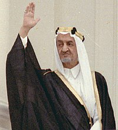
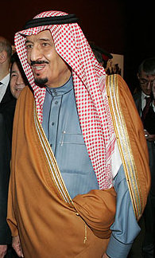
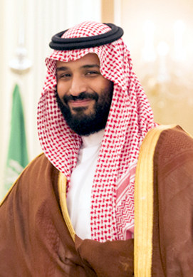
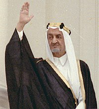
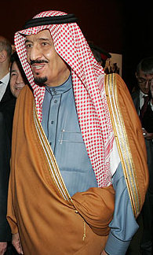
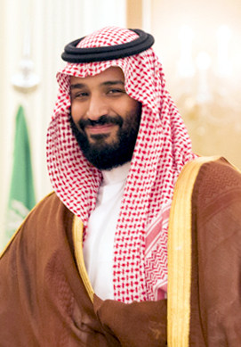

عبد العزيز بن عبد الرحمن بن فيصل آل سعود
(رحمة الله عليه)
(ذو الحجة 1292 هـ
هو مؤسس المملكة العربية السعودية الحديثة وأول ملوكها، والحاكم الرابع عشر من أسرة آل سعود.
أنطلق الملك عبد العزيز ورجاله، الذين بلغ عددهم ستين رجلاً، في ليلة 21 رمضان سنة 1319هـ الموافق 2 يناير 1902م، من الكويت قاصدين الرياض لاقتحام قصر المصمك، وهو مقر الحاكم. وبعد استعادة الرياض، وضع الملك عبد العزيز اللبنة الأولى في بناء الدولة، معلناً بداية مرحلة توحيد البلاد. وتعد مرحلة ما بعد استرداد الرياض، أهم المراحل في تاريخ عبد العزيز، إذ قضى أكثر من عشرين عاماً في معارك وحروب على أكثر من جبهة.
سعود بن عبد العزيز بن عبد الرحمن آل سعود
(رحمة الله عليه)
ولد في الكويت بتاريخ 3 شوال 1319هـ/15 يناير 1902 وتوفي في 6 ذو الحجة 1388هـ/23 فبراير 1969م، ملك المملكة العربية السعودية الثاني والحاكم الخامس عشر من أسرة آل سعود.
وهو الملك الوحيد من ملوك السعودية الذي انتهى حكمه بالعزل من قبل أفراد العائلة المالكة وليس بالوفاة.
خلال فترة توليه ولاية العهد، قام بالعديد من الإصلاحات الإدارية تحت إشراف والده الملك .
فيصل بن عبد العزيز آل سعود
(رحمة الله تغشاه)
(14 صفر 1324 هـ )
ملكُ المملكة العربية السعودية الثالث، والحاكمُ السادس عشر من أسرةِ آل سعود،
برز فيصل كسياسيٍ مؤثرٍ في عهد والده الملك عبد العزيز وشقيقه الملك سعود، حيث أدخله والده في مُعترك السياسة في سن مبكرة، وبَعَثه في مهامٍ دبلوماسية لأوروبا، وكلَّفه بقيادة القوات السعودية لتهدئة الوضع في عسير عام 1922 .
وبعد توليه الحكم، حقق الملك فيصل طفرة تنموية على أكثر من صعيد، ودافع عن القضية الفلسطينية، ورفض الاعتراف بإسرائيل، كما قرر مع عدة دول عربية حظر تصدير النفط للدول الداعمة لإسرائيل أثناء حرب أكتوبر.
خالد بن عبد العزيز آل سعود
(يرحمة الله)
(6 ربيع الأول 1331 هـ )
وُلِد الملك خالد خلال الأيام التي كان والده مشغولاً باسترداد الأحساء من الأتراك، وقد استبشر بمولد ابنه خيرًا وأسماه خالدًا
خامس ملوك المملكة العربية السعودية وأولهم اتخاذاً للقب خادم الحرمين الشريفين. هو الابن التاسع من أبناء الملك عبد العزيز الذكور
عندما تولى الملك خالد بن عبد العزيز مقاليد الحكم في 13 من شهر ربيع الأول عام 1395هـ تابع ما قام به أسلافه من أعمال جليلة في سبيل عمارة المسجد الحرام بمكة المكرمة، وقد تمت في عهده أعمال عظيمة عدة لإنجاز هذا المشروع الإسلامي العملاق. فقد حرص الملك خالد على العناية الكبيرة بالحرمين الشريفين و المشاعر لما لها من أهمية كبرى للمسلمين ولقداسة الاماكن وبهذا أمر بعدة مشاريع وافتتاح إدارات تهتم بالعديد من الجوانب المتعلقة بها .
فهد بن عبد العزيز آل سعود
(يرحمة الله)
(21 شعبان 1402 هـ)
خامس ملوك المملكة العربية السعودية وأولهم اتخاذاً للقب خادم الحرمين الشريفين. هو الابن التاسع من أبناء الملك عبد العزيز الذكور،
يتميز عهده بصدور النظام الأساسي للحكم ونظام مجلس الشورى ونظام المناطق وتوسيع الحرمين الشريفين، وإنشاء جسر الملك فهد، الواصل بين السعودية والبحرين، وله إسهامات في اتفاق الطائف الخاص بإنهاء الحرب الأهلية اللبنانية،
عبد الله بن عبد العزيز آل سعود
(يرحمة الله)
(26 جمادى الآخرة 1426 هـ )
الملك السادس للمملكة العربية السعودية، ويلقب بخادم الحرمين الشريفين وهو ذات اللقب الذي اتخذه الملك فهد قبله،
كان يعتبر من أثري أثرياء العالم، إذ ذكرت مجلة فوربس الأمريكية في نشرة لها حول أغنى الملوك في العالم نشرت في 2010م أن قيمة ثروته تقدر بـ 18 مليار دولار. على جانب آخر فقد صنفته المجلة آنفة الذكر في عام 2011م كسادس أقوى الشخصيات تأثيرا في العالم. شن حملة عسكرية على الحوثيين أواخر 2009م انتهت بتوقيع هدنة.
سلمان بن عبد العزيز آل سعود
(الملك وخادم الحرمين الشريفين حفظه الله ورعاه )
ملك المملكة العربية السعودية السابع، ورئيس مجلس الوزراء والقائد الأعلى لكافة القوات العسكرية، الحاكم العشرون من أسرة آل سعود والابن الخامس والعشرون من أبناء الملك المؤسس عبد العزيز بن عبد الرحمن آل سعود
تمت مبايعته ملكاً للمملكة العربية السعودية، في 3 ربيع الثاني 1436 هـ الموافق 23 يناير 2015م بعد وفاة الملك عبد الله بن عبد العزيز آل سعود. في عهده شهدت السعودية إنجازات لافتة وغير مسبوقة في مختلف الجوانب السياسية والاقتصادية والاجتماعية والتنموية والتنظيمية، تضمنت أعمالاً ومشاريع ومبادرات سريعة ومتلاحقة على المستوى التنموي والاجتماعي، وتقدمت السعودية في تقنية المعلومات والاتصالات والحكومة الإلكترونية تقدما كبيراً، وضعها في المراتب الدولية الأولى.
محمد بن سلمان بن عبد العزيز آل سعود
(ولي العهد)
(ذو الحجة 1405 هـ )، ولي عهد السعودية، ونائب رئيس مجلس الوزراء إضافة لكونه وزير الدفاع. وكذلك مجلس الشؤون الاقتصادية والتنمية السعودي. هو نجل الملك سلمان بن عبد العزيز آل سعود من فهدة بنت فلاح آل حثلين
أظهر محمد بن سلمان توجّهات انفتاحية ومختلفة عمَّن سبقه من قيادات السعودية، فشهدت البلاد خلال فترة ولاية عهده السماحَ للمرأة السعودية بقيادة السيارة ودخولِ الملاعبِ الرياضية وتفعيلِ هيئة الترفيه .
أضغط على صورة أحد من حكام المملكة العربية السعودية .
قلِّبْ لليمين لرؤية باقي حكام المملكة
 




